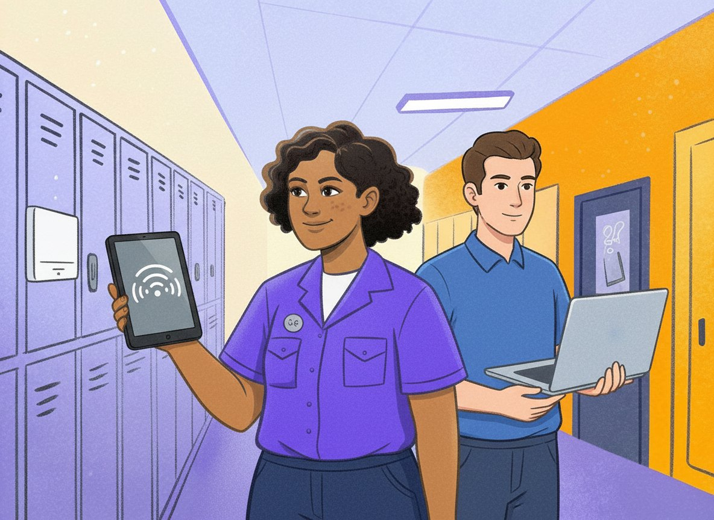

01 — Slow Wi-Fi
She checks the access point before anyone files a ticket.
Rosie reads live device telemetry, identifies whether the problem is the room, the device or the network, and either fixes it or hands your team a diagnosis instead of a complaint.
"Wi-Fi is slow in room 214." — and it is resolved before lunch.
